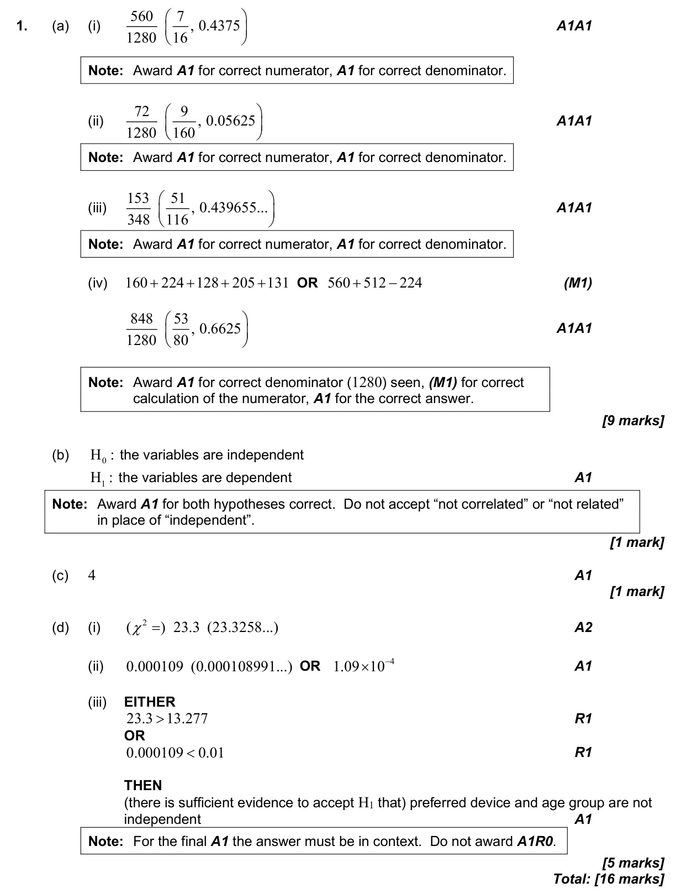

16 marks P2 TZ0 Calculator 4.11 Hypothesis testing: χ² tests and the t-test4.6 Combined, mutually exclusive, conditional, independence and probability diagrams4.5 Probability concepts and expected numbers Question Hide breakdown abcd Markscheme 